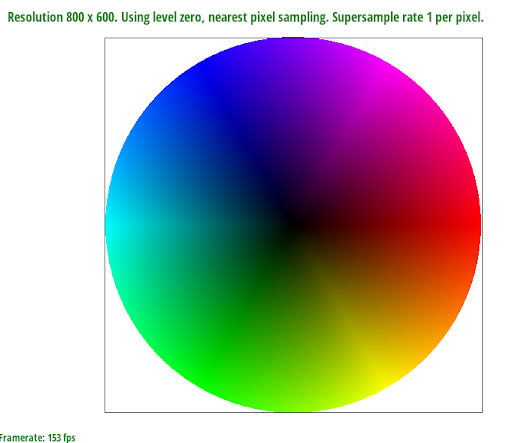

Overview
In this homework we implemented rasterization for triangles and texture mapping, as well as antialiasing techniques for both (variations of supersampling and mipmapping and texture sampling algorithms). Specifically, much of our work was done to reduce "jaggies", or aliasing artifacts due to sampling computer objects into (relatively low resolution) screen pixel space. I learned about the importance of solid arithmetic, and having a formula in mind before coding (due to several off-by-one errors). I also have an appreciation for the simplest computer graphics I see in any web png file.
Section I: Rasterization
Part 1: Rasterizing single-color triangles
We rasterize triangles using the half-space algorithm discussed in lecture. Specifically, we first delineate a bounding rectangle for the triangle. Then we check each point inside of this box using the 3-line test (for both orientations). Points that pass the test are shaded in.
Our algorithm is no worse than checking each sample within the bounding box because this is our algorithm. We perform no other checks.
Extra credit
We originally calculated the bounding box by using fractional boundaries:
float startx = fmin(std::floor(fmin(fmin(x0, x1), x2)) - 0.5, 0.5);
float endx = std::ceil(fmax(fmax(x0, x1), x2));
float starty = fmin(std::floor(fmin(fmin(y0, y1), y2)) - 0.5, 0.5);
float endy = std::ceil(fmax(fmax(y0, y1), y2));
We changed this (originally for readability) to the following:
float startx = fmax(std::floor(fmin(fmin(x0, x1), x2)), 0);
float endx = fmin(std::ceil(fmax(fmax(x0, x1), x2)), width - 1);
float starty = fmax(std::floor(fmin(fmin(y0, y1), y2)), 0);
float endy = fmin(std::ceil(fmax(fmax(y0, y1), y2)), height - 1);
This ended up being much faster. Then we experimented with moving the dX0, dX1, dX2, dY0, dY1, and dY2 calculations outside the for loop. This showed a negligible performance increase. The final code for our section took around 7 milliseconds.
| Old bounding box + dXi, dYi inside loop | ELAPSED: 387767000 ns |
| New bounding box + dXi, dYi inside loop | ELAPSED: 7039900 ns |
| New bounding box + dXi, dYi outside loop | ELAPSED: 6873000 ns (no signif. change) |
Part 2: Antialiasing triangles
We created our supersampling algorithm largely using the built-in sample buffer. We structured this buffer by having each subpixel (x, y, subpixel) correspond to the buffer index (y*width + x)*samplerate + subpixel. We looped through the pixels (in rasterization and subpixel resolution) first, and then for each one we calculated all of the contained subpixels. This let us use this simple indexing formula, and it simplified the logistics, compared to looping through all of the subpixels (e.g. row by row of subpixels). When resolving the subpixels, we just average all of them for each pixel. The coordinate calculations are also straightforward (since we switched our formula a bit from task 1 to make the math simpler). We start at the top left corner of pixels/subpixels, then increment by 0.5 times the length of the subpixel. Supersampling is useful because it lets us have a "middle ground" for edge-case pixels that are barely in the triangle. These become blurred, which people find nicer. Technically, a higher sample rate makes the Nyquist frequency higher, which can reduce artifacts (ugly).
|
|
|
|
|
The edges are getting blurred, and the transitions are getting smoother. This is because we have more subpixels sampled from, as the rate increases. This allows for smoother gradations, since we have more values and thus a more accurate sample of exactly how much of a pixel lies inside the triangle boundaries. (We can also explain less "jaggies" as due to a higher Nyquist frequency, which reduces these periodic staircase artifacts.)
Part 3: Transforms
Cubeman is waving (right arm rotated/translated). We made his head bigger and blue too.
Section II: Sampling
Part 4: Barycentric coordinates
Barycentric coordinates are basically shifting the coordinates from "real" to relative to the vertices of the triangle. Specifically, we can define a unique coordinate system using 3 numbers for the closeness of any point, to the vertices A, B, and C - alpha, beta, and gamma. A higher alpha value means a point is closer to the vertex A, and so on for beta and gamma. We can also say that alpha is proportional to the triangle formed by our point, and the other vertices B and C; and so on for beta and gamma. The formula is defined in the code; here is an explanatory picture:
The vertices of this triangle are red, blue, and green (I think). Barymetric coordinates are used to average the three colors. So if the red, blue, and green vertices are A, B, and C respectively, then alpha is the "redness" of a vertex, beta is the "blueness", and gamma is the "greenness". As you get closer to a vertex, you have a higher weight on that vertex's color, because the respective barycentric coordinate is increasing (and the others decrease in turn).
Part 5: "Pixel sampling" for texture mapping
Pixel sampling is essentially sampling pixels from the texture to perform texture mapping from texture space (some texturemap) onto the real screen. We start with real pixels in a real triangle. We then convert to barycentric coordinates, which we use to find the corresponding location in the texturemap triangle. The coordinates in texture space are U,V. We then use some sampling method to find what the right color is, to color the original pixel on the screen that we were working with.
Nearest neighbor sampling just takes the color of the nearest neighbor (pixel in the texture map) to U,V. Bilinear sampling actually takes an interpolation (sort of like an average) between the 4 bounding pixels. We do this by interpolating between the two pixels that are parallel to each other, then interpolating a 3rd time between those interpolations.
Here are sample comparisons:
|
|
|
|
|

|
There are smoother transitions (more colors, producing more intermediate gradations) for bilinear, than for nearest neighbor. This is because we are interpolating between 4 pixels instead of taking 1 pixel value. There will be a large difference between the methods when there is a large color difference very quickly (such as stripes or eye highlights); since then nearest neighbor will pick the different colors while bilinear will try to interpolate them together. (Bilinear may also create a larger color palette, which is desirable/undesirable for different media).
Part 6: "Level sampling" with mipmaps for texture mapping
Level sampling / mipmapping is sampling from mipmaps (downsized versions of the original texturemap). We do this to keep the texture smooth (no jaggies) even when it gets mapped to compressed regions in real screen space. We implemented it through the calculation for level D described in lecture (depends on the rate of change of U and V with respect to X and Y. When they are higher (bigger Jacobian -> more stretched), we use a lower (less detailed) mipmap level and vice versa, according to our formula. This is to mitigate artifacts in these stretched regions. We also changed our algorithm to use either level 0, nearest level, or linear interpolation (just interpolating between two samples) based on LSM.
Nearest vs. Bilinear pixel sampling was discussed in task 5. Essentially, bilinear is slower but has better antialiasing power (due to smoothing out colors). Bilinear uses more memory, since it needs to store intermediate values, while nearest neighbor can technically loop through the values without storing them (probably negligible difference).
Level sampling is mainly dependent on the transformation of the image, and different levels are used for different cases (e.g. small vs. large screen regions transformed to). However, if we just choose one, higher mipmap levels both take less memory and have higher antialiasing power (with essentially the same speed). This is because they are a lower resolution version of the texture. We normally use multiple levels, so we have to store/compute all of them though. In the general case, the higher our maximum mipmap level is, the more memory and lower speed we have (in exchange for better antialiasing power). Also, L_LINEAR does sampling twice, so it is naturally slower (and retrieves more memory, since it fetches mipmaps from two separate levels).
We discussed supersampling before, but
the number of samples per pixel takes more memory (for subpixels), more time (because calculations for each subpixel), in exchange for better antialising power.
Here are pngs transformations of `L_ZERO and P_NEAREST, L_ZERO and P_LINEAR, L_NEAREST and P_NEAREST, as well as L_NEAREST and P_LINEAR`, in respective order:
|
|
|

|
|
L_nearest makes smoother (higher mipmap level, downscaled) images, compared to L_Zero.
P_Linear allows for more gradation, which also improves visibility slightly when there are pixels condensed into a smaller space (in the inner pelvis bone)
Section III: Art Competition
If you are not participating in the optional art competition, don't worry about this section!